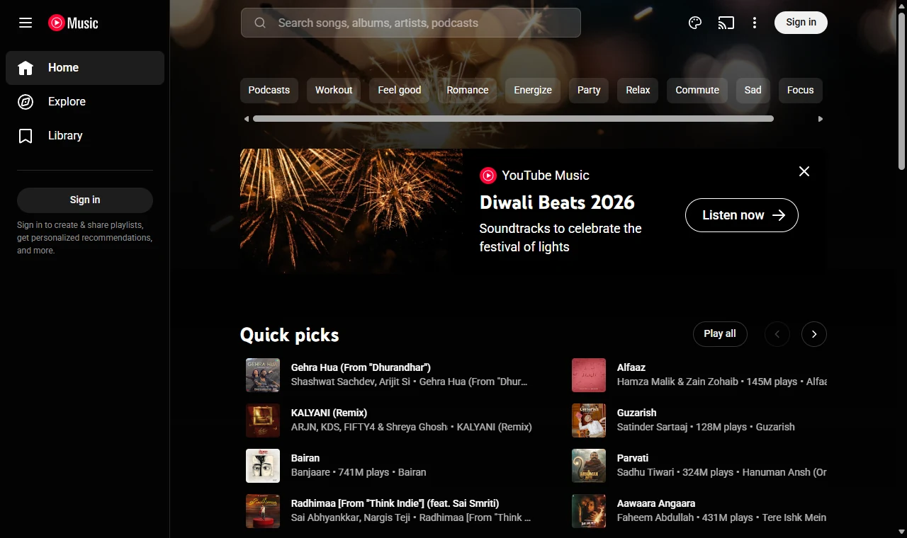
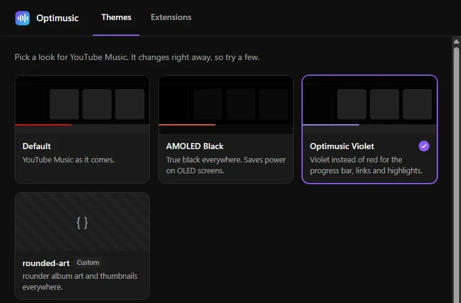
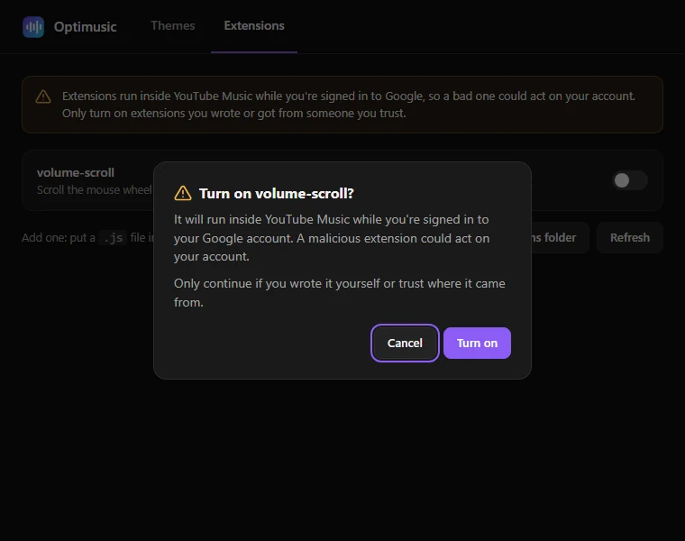

Synced lyrics
The line being sung lights up and the lyrics follow the song. Click any line to jump there. Optional, from LRCLIB.
A featherweight desktop app for Windows, Linux and macOS. Media keys, a tray player, synced lyrics and themes.

Electron apps carry their own copy of Chromium. Optimusic travels light: it uses the browser engine your system already has, tuned to use less.
It's the real YouTube Music, signed in with your own account. Optimusic adds the desktop parts around it.
The line being sung lights up and the lyrics follow the song. Click any line to jump there. Optional, from LRCLIB.
AMOLED Black, Optimusic Violet or your own CSS, a bit like Spicetify. Extensions stay off until you turn them on.

Previous, play and next right under the Windows taskbar preview, with the album art.
Shows the song, artist and cover, with a link to the track. Clears when you pause.
Play, pause and skip from your keyboard or the tray.

Every line is on GitHub under the MIT license, so you can read exactly what it does.
No account, no trial, no catch. These links always get the newest version.
sudo apt install ./Optimusic-Linux.deb. The AppImage runs anywhere.Older versions and release notes are on the Releases page. See the code signing policy for how releases are built.
Something else? Ask on GitHub.
No. Optimusic is an independent, open-source project, not made or endorsed by Google or YouTube. It shows the real YouTube Music website and adds desktop features around it.
You sign in on Google's own sign-in page. Optimusic doesn't read or store your password, and its code is public, so anyone can check. Themes and extensions never run on Google's sign-in pages.
From LRCLIB, a free, open lyrics database. It's off until you turn it on, because it sends the song's title, artist and length to lrclib.net. Songs it doesn't have keep YouTube Music's own lyrics.
The installers aren't signed with a paid code-signing certificate yet, so your system doesn't recognise the publisher. On Windows choose More info, then Run anyway. On macOS open System Settings, Privacy & Security, and click Open Anyway.
No to both. It works like YouTube Music in a browser, including ads on the free plan, and downloading isn't allowed by YouTube's terms.
Pick Off, Notify me or Install automatically from the tray. Notify me is the default: a new version shows up in the tray menu and nothing downloads until you click it.